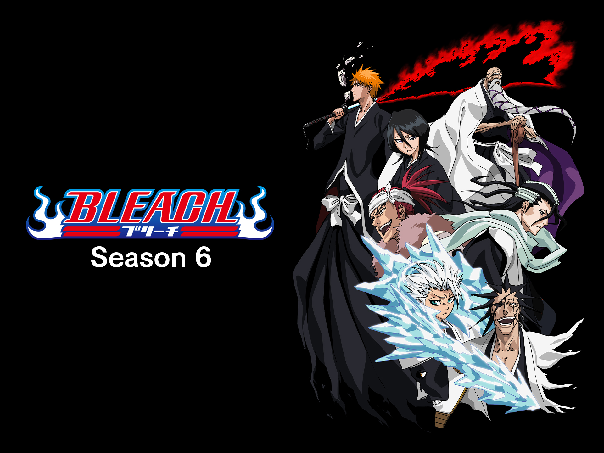

que es bleach
- Bleach (ブリーチ, Burīchi ?, romanizado como BLEACH en Japón) es una serie manga y posteriormente anime escrita e ilustrada por Tite Kubo y su adaptación al anime fue dirigida por Noriyuki Abe.

trama
- La serie narra las aventuras de un adolescente llamado Ichigo Kurosaki, un estudiante de quince años que tiene la habilidad de interactuar con los espíritus. Una noche, Ichigo se encuentra con una Shinigami (死神, lit. dios de la muerte) llamada Rukia Kuchiki. Ella se sorprende por su habilidad para poder verla, pero su conversación es interrumpida por la aparición de un Hollow (ホロウ, horō, lit. hueco), un espíritu maligno. Después de que Rukia fuera gravemente herida al tratar de proteger a Ichigo, ésta intenta traspasarle la mitad de sus poderes a Ichigo para poder enfrentarse al Hollow en igualdad de condiciones.
Sin embargo, Ichigo, sin darse cuenta, absorbe los poderes casi por completo, y logra vencer con facilidad al espíritu. Al día siguiente, Rukia aparece en la clase de Ichigo como una humana de apariencia normal gracias a un cuerpo artificial (Gigai o cuerpo artificial), y le informa que debido a que ha absorbido todos sus poderes no puede regresar a su mundo hasta que los recupere. Entretanto, Ichigo acoge a Rukia en su casa y toma su trabajo de Shinigami, defendiendo a los seres humanos de los hollows y orientando a las almas buenas después de la muerte a un lugar llamado la Sociedad de Almas (尸魂界, Sōru Sosaeti).
Unos meses más tarde, en el sexto volumen de la serie, los superiores de la Sociedad de Almas se dan cuenta de que Rukia le había entregado sus poderes a un humano, lo cual está prohibido en la Sociedad de almas, por lo que envían a dos Shinigami para arrestarla y aplicarle la pena de muerte. Ichigo no logró evitar la captura de Rukia, pero con la ayuda de varios de sus amigos de clases que adquirieron capacidades espirituales, y el ex-capitán Shinigami Kisuke Urahara, parten hacia la base de la Sociedad de Almas, guiados por Yoruichi Shihoin. Una vez allí, Ichigo y el resto luchan contra la élite militar de Shinigami y finalmente consiguen detener la ejecución de Rukia.
En ese entonces, se revela que la ejecución de Rukia y del intento de rescate de Ichigo fueron manipulados por Sōsuke Aizen, un Shinigami de alto nivel, el cual se creía que había sido asesinado, como parte de su plan para poder tomar el control de la Sociedad de Almas. Aizen traiciona a sus compañeros y aliados Shinigami marchándose a Hueco Mundo (虚圏, Ueko Mundo) con los hollow, convirtiéndose en el principal antagonista de la serie. Ichigo se alía con los que eran sus enemigos en la Sociedad de Almas al ver que todo esto fue planeado por Aizen y éstos dejan en libertad a Rukia.
Tiempo después aparecen nuevos enemigos, los Arrancar (アランカル, arankaru) una especie de evolución de los hollows, los cuales han sido enviados a la tierra por Aizen, que pretende destruir la ciudad de Karakura (空座町, Karakura-chō) con el fin de forjar una llave con la energía espiritual que se encuentra allí para poder acceder al Rey de la Sociedad de almas y tener el control en todos los mundos. Actualmente esta trama aún no se ha resuelto y de acuerdo con el autor, el final de la serie todavía no ha sido planeado o escrito.
Aspectos de la Serie
-
Las Almas Modificadas(改造魂魄, kaizō konpaku) son almas artificiales creadas por los investigadores de la Sociedad de almas antes del inicio de la historia de Bleach y los Bount (バウント, baunto) un grupo de personas que tiene poderes especiales. Debido a que son razas diferentes viven en mundos totalmente diferentes.
Quincy:
Los Quincy (滅却師, kuinshī, lit. "destructor") un clan de seres humanos que a lo largo de muchos siglos han adquirido poderes espirituales, para poder defenderse de los hollows.
Visored:
Los Visored (仮面の軍勢, vaizādo, lit. "soldados enmascarados") son un grupo de Shinigamis que han logrado conseguir los poderes de un Hollow, sin perder las habilidades de un shinigami.
Arrancar
Los Arrancar (アランカル, arankaru) que son aquellos hollow que han conseguido quitarse parte de su máscara y han obtenido poderes de shinigami.